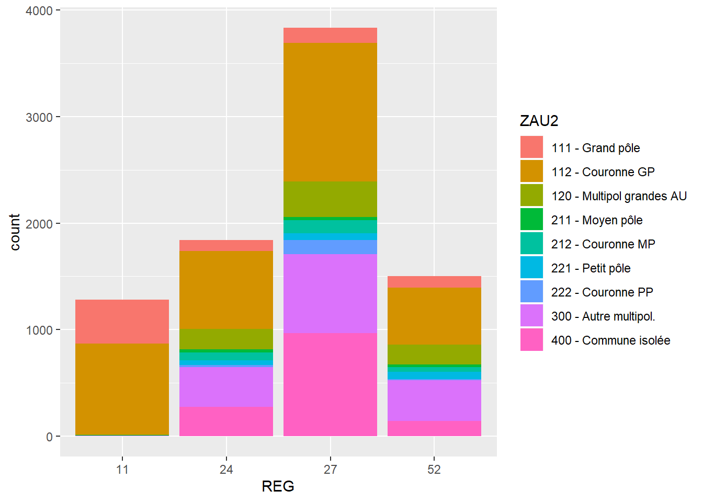
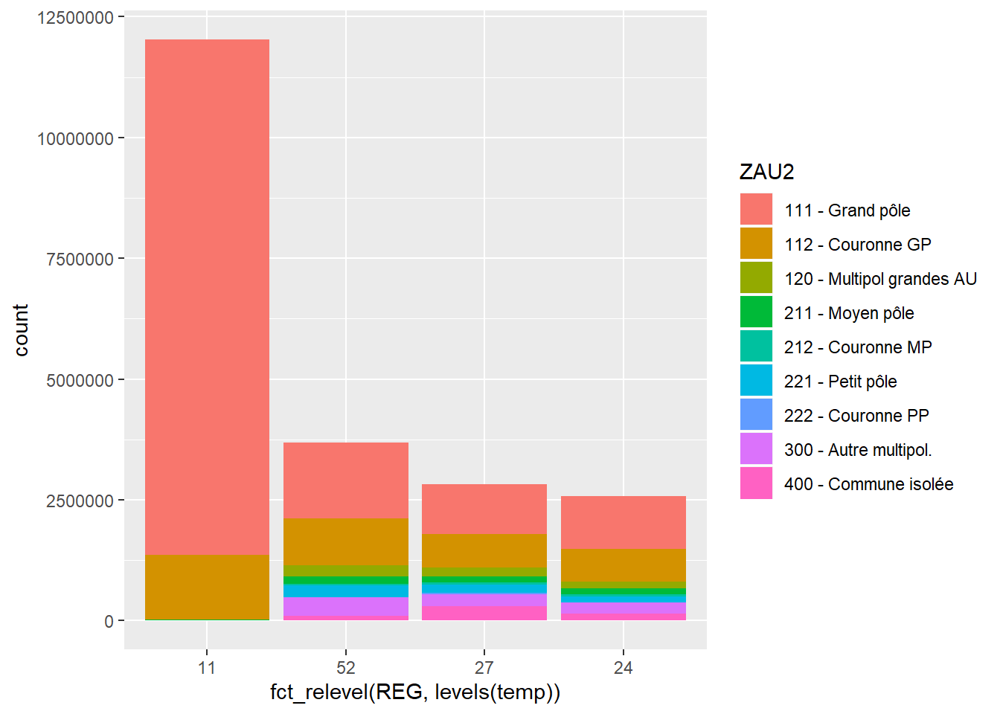
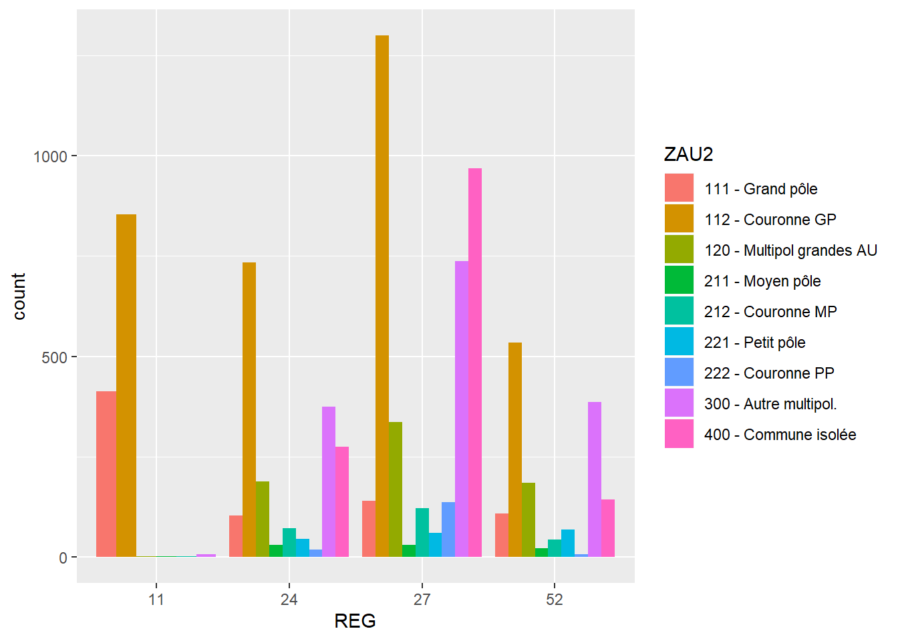
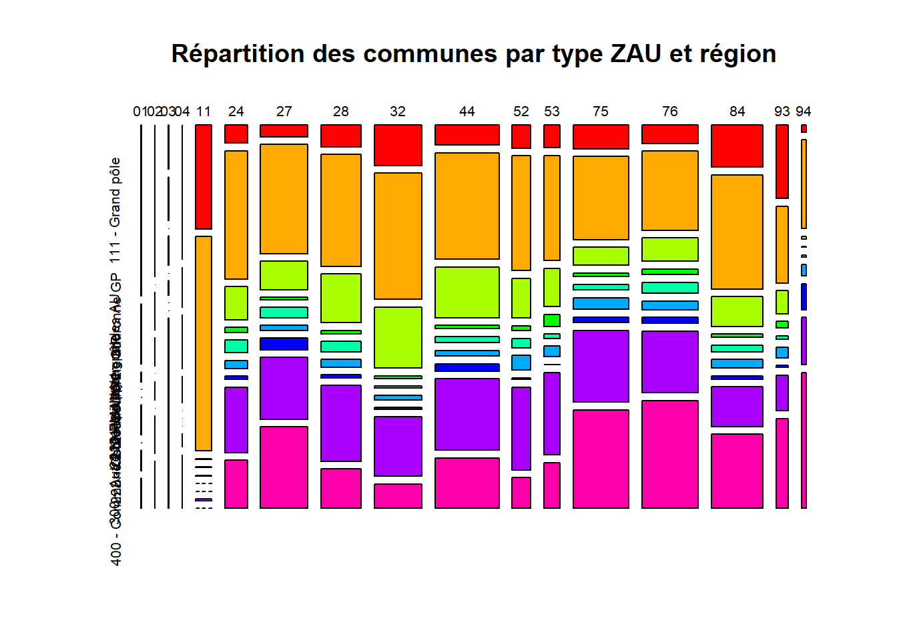
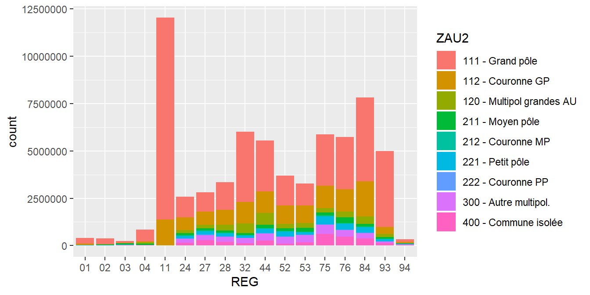

Chapitre 6 Deux variables qualitatives
6.1 Définitions
- On calcule les effectifs de chaque couple possible de modalités i et j. \(i \in \{1...k\}, j \in \{1...r\}\). Exemple : le nombre de communes du type ZAU i et de la région j.
- \(N_{ij}=\sum_c \mathbb{I}_{c=i} \cdot \mathbb{I}_{c=j}\) (nombre de communes du type ZAU i et de la région j)
- \(N_{i.}=\sum_c \mathbb{I}_{c=i}\) et \(N_{.j}=\sum_c \mathbb{I}_{c=j}\) sont appelées effectifs marginaux (nombre de communes du type ZAU i, puis nombre de communes de la région j)
- \(f_{ij}=\frac{N_{ij}}{N}\) : la fréquence
- \(f_{ij}^{*} = \frac{N_{ij}}{N_{i.}}\) les profils ligne : la part de communes de type i et de la région j parmi les communes du type i
- \(f_{ij}^{**} = \frac{N_{ij}}{N_{.j}}\) les profils colonne : la part de communes de type i et de la région j parmi les communes de la région j
6.2 Tableaux de synthèse
6.2.1 Tableau de contingence (effectifs)
Le tableau à double entrée, avec les lignes et colonnes correspondant aux modalités des variables qui sont croisées est appelé tableau de contingence. Les cellules contiennent le nombre d’occurrences correspondant à chaque case.
tab <- select (dat, ZAU2, REG) %>%
filter (REG %in% c("11", "24", "27", "52")) %>%
droplevels () %>%
table ()
as.data.frame (tab) %>%
spread (key = REG, value = Freq) %>%
datatable (caption = "VENTILATION DES COMMUNES PAR REGION ET PAR CLASSE DE ZAU")table() fonctionne aussi au-delà de 2 variables, à l’image des tableaux croisés dynamiques dans Excel®, ou de la PROC FREQ en SAS®.
6.2.2 Tableau des fréquences
Le tableau des fréquences est obtenu, comme auparavant, avec la fonction prop.table().
freq <- tab %>% prop.table() %>% round(digits = 3) * 100
addmargins (freq) # permet d'ajouter les fréquences totales pour chaque lignes et colonnes## REG
## ZAU2 11 24 27 52 Sum
## 111 - Grand pôle 4.9 1.2 1.7 1.3 9.1
## 112 - Couronne GP 10.1 8.7 15.4 6.3 40.5
## 120 - Multipol grandes AU 0.0 2.2 4.0 2.2 8.4
## 211 - Moyen pôle 0.0 0.4 0.4 0.3 1.1
## 212 - Couronne MP 0.0 0.9 1.4 0.5 2.8
## 221 - Petit pôle 0.0 0.5 0.7 0.8 2.0
## 222 - Couronne PP 0.0 0.2 1.6 0.1 1.9
## 300 - Autre multipol. 0.1 4.4 8.7 4.6 17.8
## 400 - Commune isolée 0.0 3.3 11.5 1.7 16.5
## Sum 15.1 21.8 45.4 17.8 100.1## REG
## ZAU2 11 24 27 52
## 111 - Grand pôle 4.9 1.2 1.7 1.3
## 112 - Couronne GP 10.1 8.7 15.4 6.3
## 120 - Multipol grandes AU 0.0 2.2 4.0 2.2
## 211 - Moyen pôle 0.0 0.4 0.4 0.3
## 212 - Couronne MP 0.0 0.9 1.4 0.5
## 221 - Petit pôle 0.0 0.5 0.7 0.8
## 222 - Couronne PP 0.0 0.2 1.6 0.1
## 300 - Autre multipol. 0.1 4.4 8.7 4.6
## 400 - Commune isolée 0.0 3.3 11.5 1.7
## Sum 15.1 21.8 45.4 17.8## REG
## ZAU2 11 24 27 52 Sum
## 111 - Grand pôle 4.9 1.2 1.7 1.3 9.1
## 112 - Couronne GP 10.1 8.7 15.4 6.3 40.5
## 120 - Multipol grandes AU 0.0 2.2 4.0 2.2 8.4
## 211 - Moyen pôle 0.0 0.4 0.4 0.3 1.1
## 212 - Couronne MP 0.0 0.9 1.4 0.5 2.8
## 221 - Petit pôle 0.0 0.5 0.7 0.8 2.0
## 222 - Couronne PP 0.0 0.2 1.6 0.1 1.9
## 300 - Autre multipol. 0.1 4.4 8.7 4.6 17.8
## 400 - Commune isolée 0.0 3.3 11.5 1.7 16.5Ici, on peut voir que, dans les communes que nous avons filtré :
- environ 10% des communes sont dans la région 11 ET dans une couronne de grand pôle
- il y a 16,5% des communes qui sont isolées
- la région 27 totalise plus de 45% des communes
6.2.3 Profils-ligne
Grâce à l’argument margin de la fonction prop.table(), on peut afficher les profils-ligne (avec margin = 1). On regarde ainsi la proportion des régions pour chaque ZAU.
## REG
## ZAU2 11 24 27 52 Sum
## 111 - Grand pôle 54.1 13.5 18.3 14.1 100.0
## 112 - Couronne GP 24.9 21.5 38.0 15.6 100.0
## 120 - Multipol grandes AU 0.4 26.4 47.1 26.1 100.0
## 211 - Moyen pôle 3.4 34.5 35.6 26.4 99.9
## 212 - Couronne MP 0.8 30.0 50.8 18.3 99.9
## 221 - Petit pôle 0.0 26.3 34.3 39.4 100.0
## 222 - Couronne PP 0.0 11.6 83.5 4.9 100.0
## 300 - Autre multipol. 0.5 24.9 49.0 25.6 100.0
## 400 - Commune isolée 0.0 19.8 69.9 10.3 100.0
## Sum 84.1 208.5 426.5 180.7 899.8Ici, on voit que, parmi les communes que nous avons filtré :
- 70% des communes classées comme “Commune isolée” sont dans la région 27
- 54% des communes classées “Grand pôle” sont dans la région 11
6.2.4 Profils-colonne
Pour obtenir les profils-colonnes, on se sert de margin = 2. On regarde alors la proportion de ZAU pour chaque région.
## REG
## ZAU2 11 24 27 52 Sum
## 111 - Grand pôle 32.2 5.6 3.7 7.2 48.7
## 112 - Couronne GP 66.6 39.8 33.9 35.6 175.9
## 120 - Multipol grandes AU 0.2 10.2 8.8 12.4 31.6
## 211 - Moyen pôle 0.2 1.6 0.8 1.5 4.1
## 212 - Couronne MP 0.2 3.9 3.2 2.9 10.2
## 221 - Petit pôle 0.0 2.5 1.6 4.6 8.7
## 222 - Couronne PP 0.0 1.0 3.6 0.5 5.1
## 300 - Autre multipol. 0.5 20.4 19.2 25.7 65.8
## 400 - Commune isolée 0.0 14.9 25.3 9.5 49.7
## Sum 99.9 99.9 100.1 99.9 399.8De la même manière que précedemment, parmi nos communes :
- 66,6% des communes de la région 11 sont classées comme “Courrone GP”
- 2,5% des communes de la région 24 sont classées comme “Petit pôle”
6.3 Graphiques
6.3.1 Diagramme en bâtons
Pour visualiser un croisement de deux variables qualitatives, il est possible de faire un diagramme superposé. La fonction est similaire aux diagrammes en bâtons déjà tracés. Cette fois, on précise dans aes que les régions sont sur l’axe, et que les différents ZAU sont colorés (argument fill).
dat4 <- dat %>%
filter (REG %in% c("11", "24", "27", "52"))
bar <- ggplot (dat4, aes(x = REG, fill = ZAU2))
bar + geom_bar (position = "stack") # précise que les ZAU sont "empilées"
Si l’on veut ordonner les modalités par ordre décroissant de la hauteur totale des barres, c’est un peu plus compliqué :
# On calcule la population totale par région
prov <- dat4 %>%
group_by (REG) %>%
summarise (pop_reg = sum (P14_POP, na.rm = T))
# On crée un vecteur contenant les modalités de REG par ordre décroissantes de population
temp <- fct_reorder (prov$REG, -prov$pop_reg)
# On produit le graphique en ordonnant les régions sur la base de leur ordre dans l'objet "temp"
ggplot (data = dat4, aes (x = fct_relevel (REG, levels (temp)),
fill = ZAU2,
weight = P14_POP)) +
geom_bar (position = "stack")
Il est aussi possible de faire un diagramme juxtaposé en changeant la valeur position de la fonction geom_bar :

6.3.2 Graphique mosaïque
Pour afficher graphiquement les proportions de deux modalités, il est possible de faire un graphique mosaïque :
# On inverse colonnes et lignes pour avoir une représentation plus lisible
tab <- table(dat$REG, dat$ZAU2)
cols <- rainbow(nlevels(dat$ZAU2))
plot(tab,col = cols, main = "Répartition des communes par type ZAU et région")
6.4 Avec pondération
Si on désire connaître le “poids” d’une variable suivant le croisement de 2 variables qualitatives, on peut créer un tableau pondéré. Si par exemple, on souhaite connaître la population pour chaque croisement REG / ZAU : on se sert de la fonction xtabsen précisant la formula qu’on souhaite (P14_POP par REG et ZAU).
dat <- mutate (dat, ZAU_COURT = as.factor (substr (ZAU, start = 1, stop = 3)))
tab <- xtabs (formula = P14_POP ~ REG + ZAU_COURT, data = dat)
tab## ZAU_COURT
## REG 111 112 120 211 212 221 222
## 01 307294 59632 4149 0 0 15995 0
## 02 299891 0 19388 33187 0 11311 0
## 03 109538 17223 0 70037 0 10984 0
## 04 623948 41639 71880 75100 0 0 0
## 11 10659489 1349018 985 12927 757 0 0
## 24 1088230 676997 142859 130552 41751 121185 7883
## 27 1025799 689277 194488 119122 41438 172248 30457
## 28 1443395 800329 286367 117695 40818 168795 10085
## 32 3709369 1124937 521043 108449 5885 129443 4876
## 44 2699363 1134602 621246 177829 26099 242055 26455
## 52 1575655 973415 225904 149431 37815 250004 3036
## 53 1169052 914047 244926 214774 17052 145728 786
## 75 2708020 1190761 225545 171744 40468 410303 33199
## 76 2748178 1179129 315400 293385 54187 302203 24407
## 84 4432062 1857298 374734 144472 43441 288745 15498
## 93 4003370 365184 164985 101619 7703 119567 2163
## 94 135450 64031 302 11625 2303 33598 8873
## ZAU_COURT
## REG 300 400
## 01 8886 4230
## 02 11478 8656
## 03 0 44556
## 04 5950 24250
## 11 4389 0
## 24 223588 144390
## 27 249496 298298
## 28 279772 188389
## 32 286099 116055
## 44 368481 258515
## 52 372614 102959
## 53 387382 182796
## 75 494269 604835
## 76 348798 465066
## 84 282066 382650
## 93 81279 137568
## 94 10675 57355Une fois l’objet table généré, tout est identique pour les tables. Il faut ajouter le paramètre weight pour les graphiques.

Ici, la hauteur de chaque rectangle coloré représente la population totale des communes concernées par le croisement.